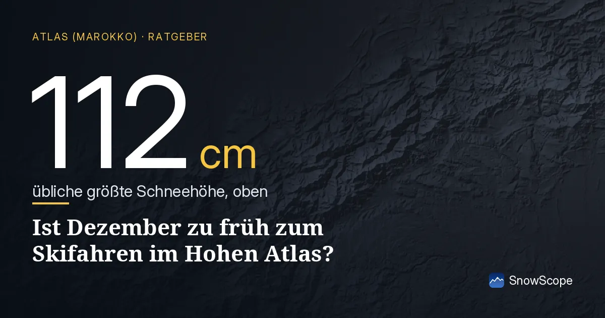

Ist Dezember zu früh zum Skifahren im Hohen Atlas?
Der Dezember ist früh im Hohen Atlas. Auf Mittelhang um 2929 m hält Oukaimeden eine typische Schneehöhe von 18 cm im Dezember, gegenüber 53 cm im März, wenn der Schnee seinen Höhepunkt erreicht. Aber dünn bedeutet nicht geschlossen: das richtige Timing und die richtige Höhe können fahrbaren Schnee liefern.
Die Live-Schneeprognose für Oukaimden ski resort in der SnowScope-AppSchneehöhen, Pulverschnee-Alarme und 3D-Karte, gratis.
Wie sich der Schnee über die Saison aufbaut
Der Atlas bekommt Schnee in Schüben. Anstatt stetiger wöchentlicher Fälle kann ein Sturm die halbe Saisonsumme fallen lassen, dann schaben Wochen Sonne und Wind ihn zurück. Dieser Rhythmus bedeutet, dass der Dezember oft ankommt, bevor sich die Hauptschneedecke gebildet hat.
Die Tiefe wächst mit der Höhe und mit dem Monat. Am Tal bei 2600 m ist der typische Dezemberschnee 16 cm. Auf Mittelhang bei 2929 m erreicht er 18 cm. An der Spitze bei 3258 m klettert er auf 20 cm. Sprung in den März und die gleichen Höhen halten 46 cm, 53 cm und 58 cm. Die oberen Hänge schneien immer zuerst und halten ihn am längsten.

Wann der Dezember funktioniert
Der späte Dezember bietet bessere Chancen als der frühe. Bis zum 1. Dezember hatten nur 2 % der vergangenen Winter 50 cm oder mehr am Tal, und 26 % hatten mindestens 25 cm. Bis zum 25. Dezember steigen diese Anteile auf 7 % und 37 %. Bis zum 31. Dezember erreichen sie 9 % und 37 %. Das Muster hält auch auf Mittelhang: 4 % der Winter erreichen 50 cm bis zum 15. Dezember, steigend auf 13 % bis zum 25. Dezember.
Die oberen Hänge bleiben voraus. Bei 3258 m am 15. Dezember hatten 15 % der vergangenen Winter 50 cm oder mehr, steigend auf 20 % bis zum 25. Dezember. Wenn du eine Wahl der Höhe hast, geh im Dezember höher.

Das Dünnschnee-Risiko
Felsen und freier Boden sind echte Gefahren im frühen Dezember. Der letzte Winter zu Weihnachten zeigte beide Extreme: Mittelhang hielt 78 cm am 25. Dezember 2025, aber das Tal war blank. Dieses Jahr wird das gleiche Muster folgen: die Tiefe steigt steil mit der Höhe.
Präparierte Pisten und oberes Gelände sind sichere Wetten als untere Hänge oder Skitourengelände im Dezember. Schau auf die SnowScope-Karte für tatsächliche Tiefe, bevor du buchst.
Februar und März: die sichere Wahl
Wenn deine Termine flexibel sind, verschieb sie nach vorne. Die beste Woche der ganzen Saison auf Mittelhang ist Woche 9, später Februar: 59 % der vergangenen Winter trugen 50 cm oder mehr, mit einer typischen Tiefe von 59 cm. Der März erreicht seinen Höhepunkt bei 53 cm typischer Tiefe, erreicht in etwa der Hälfte aller Winter.
Die Saison läuft lange: ein typischer Winter sieht 138 Tage mit Schnee am Boden. Aber die ersten Wochen sind die dünnsten. Der letzte Winter spitzte sich auf 132 cm auf Mittelhang und 181 cm an der Spitze, aber dieser Höhepunkt kam nach Januar.
Was der letzte Winter uns lehrt
Die Saison 2025-26 zeigte, wie variabel der Atlas ist. Bis zum 15. Dezember hielt Mittelhang 33 cm, leicht über dem typischen 16 cm für dieses Datum. Bis Weihnachten war es auf 78 cm gewachsen, weit voraus vom 20 cm Norm. Doch andere Dezember sind blank: in 1 von 5 Wintern am 15. Dezember liegt Mittelhang fast schneefrei, mit weniger als 5 cm.
Die Lektion: schau die tatsächliche Vorhersage an, bevor du packst. Frühjahrestrips zum Hohen Atlas erfordern entweder Flexibilität oder Glück.
Tipps für Skifahrer
- Wenn der Dezember deine einzige Option ist, buche späten Dezember nach Überprüfung der SnowScope-Karte auf jüngste Schneefälle.
- Wähle immer Mittelhang oder die Spitze des Skigebiets über dem Tal in der Frühjahrsaison; Tiefe gewinnt 2–5 cm pro 300 m Höhengain.
- Ziel auf Februar Woche 9 (später Februar) oder jede Woche im März für den zuverlässigsten Schnee.
- Frühjahrespisten sind dünn: bleib auf präpariertem Gelände, pass auf Felsen auf und vermeide Skitourengelände, bis SnowScope 50 cm oder mehr zeigt.
- Schau die Zwei-Wochen-Vorhersage und die tägliche Schneekarte vor der Buchung von Flügen oder Transport an; der Atlas kann nach einem einzelnen Sturm von blank zu gut kippen.
Zu diesen Zahlen
Die Schneehöhen der Skigebiete sind der meiste Schnee in den oberen Hängen am angegebenen Tag; es sind Schätzungen für eine Fläche, keine Messung an einem Punkt. Prognosen können sich ändern. Lies vor dem Freeriden immer den offiziellen Lawinenlagebericht.
Diesen Bericht zitieren
Für Forschung, Lehre oder Presse: Zahlen und Grafiken sind unter CC BY 4.0 mit dieser Quellenangabe frei nutzbar.
SnowScope (2026), Ist Dezember zu früh zum Skifahren im Hohen Atlas?, https://snowscope.app/blog/de/2026/11/decembre-trop-tot-pour-skier-haut-atlas.html, abgerufen am 2026-11-14
SnowScope (Atlas Labs). (2026, November 14). Ist Dezember zu früh zum Skifahren im Hohen Atlas?. SnowScope snow reports. https://snowscope.app/blog/de/2026/11/decembre-trop-tot-pour-skier-haut-atlas.html
BibTeX
@misc{snowscope2026decembretroptotpourskier,
author = {{SnowScope (Atlas Labs)}},
title = {Ist Dezember zu früh zum Skifahren im Hohen Atlas?},
year = {2026},
month = nov,
howpublished = {\url{https://snowscope.app/blog/de/2026/11/decembre-trop-tot-pour-skier-haut-atlas.html}},
note = {Published 2026-11-14 13:29 UTC; accessed 2026-11-14}
}· CC BY 4.0 · Methoden, Daten und Werkzeuge →
Oukaimden ski resort: Schnee und Temperatur nach Höhe, dieser Winter vs letzter (Werkzeuge) →
Oukaimden ski resort folgen
Gratis: eine Nachricht, wenn Neuschnee kommt, und jeden Morgen die Vorhersage.
Weitere Schneeberichte

Am Skigebiet Oukaïmeden in Marokko bringt ein typischer 15. Dezember nur 16 cm in der Mittelhöhe. SnowScope zeigt Chancen aus 46 Wintern Daten.

Ein praktisches Notizbuch zu Oukaïmeden im Hohen Atlas: wann der Schnee meist kommt, wie viel, welche Hänge und die Anreise ab Marrakesch.